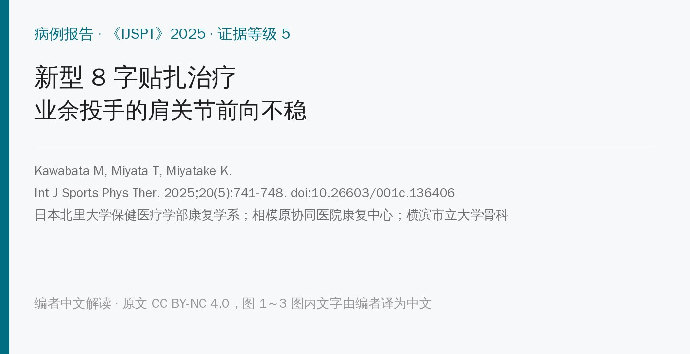
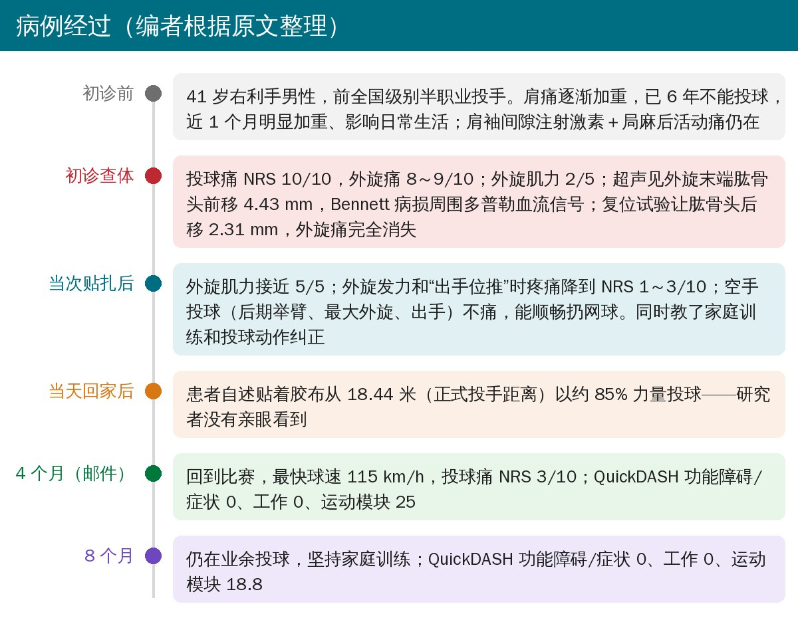
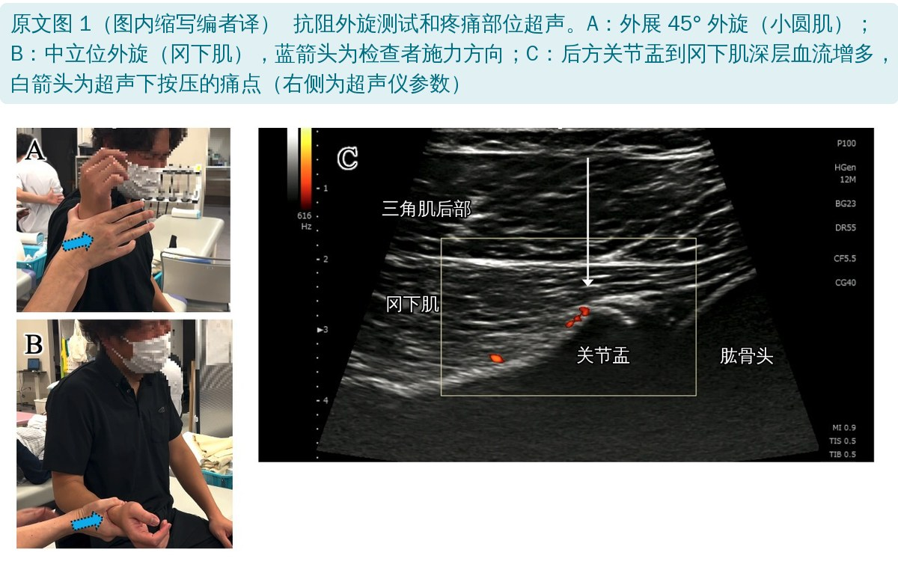
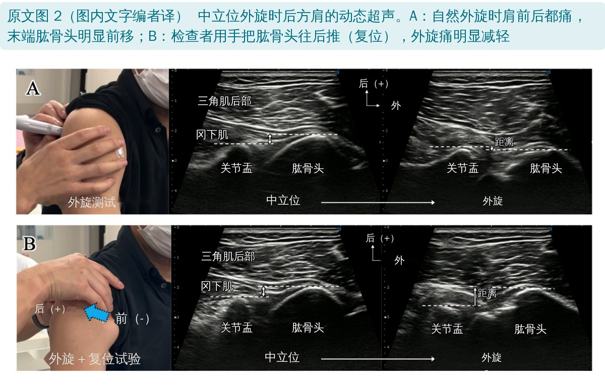
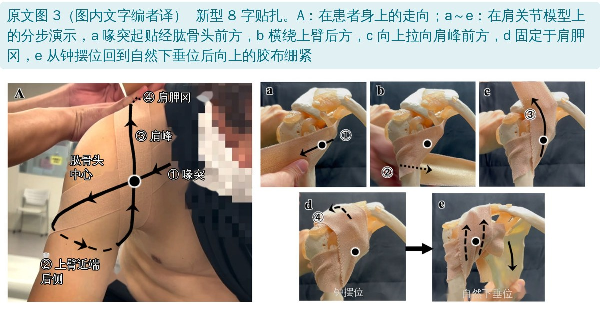
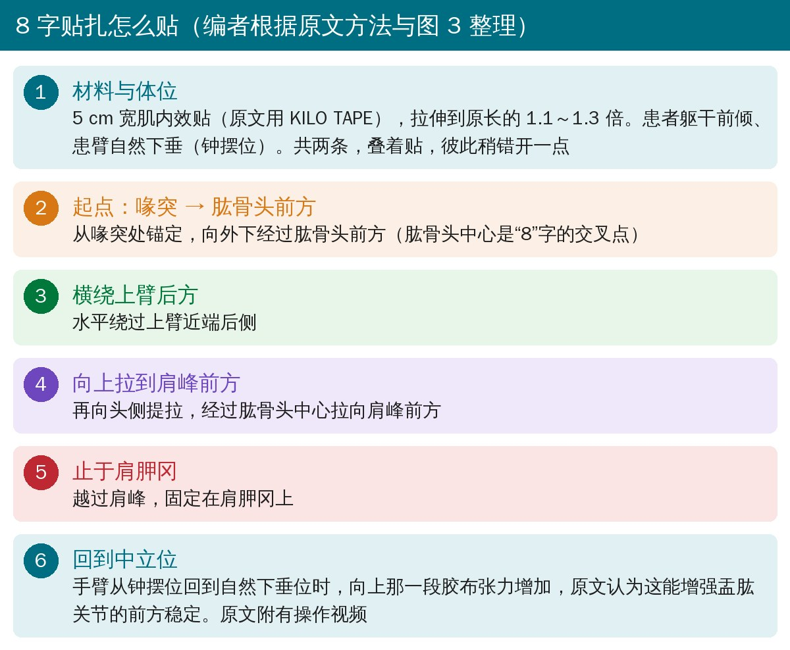
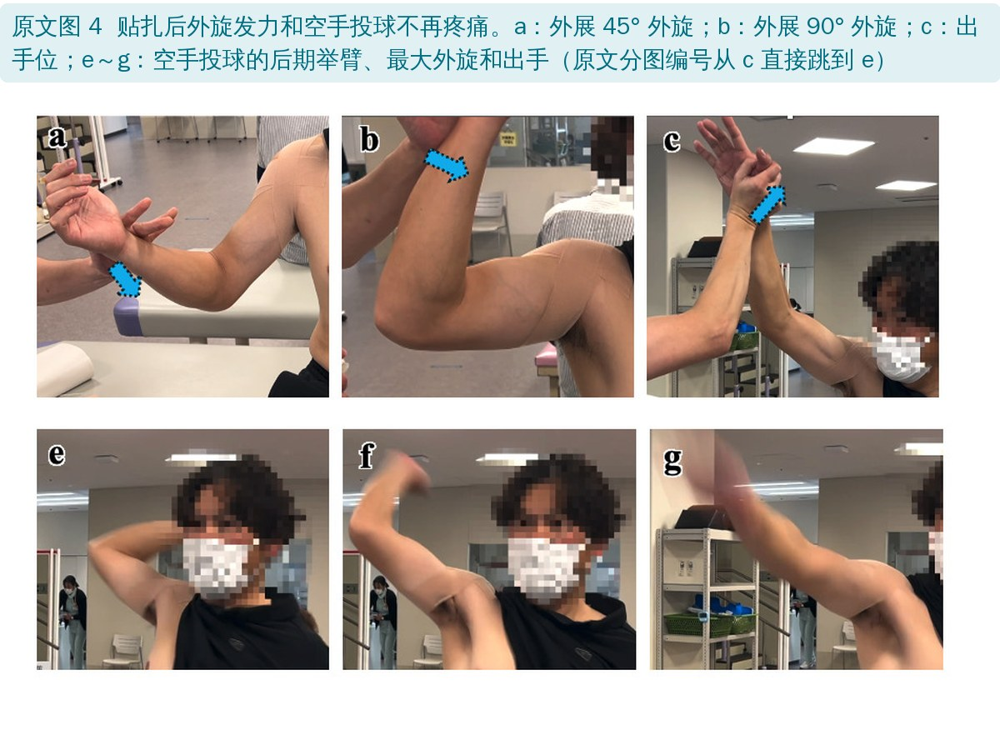
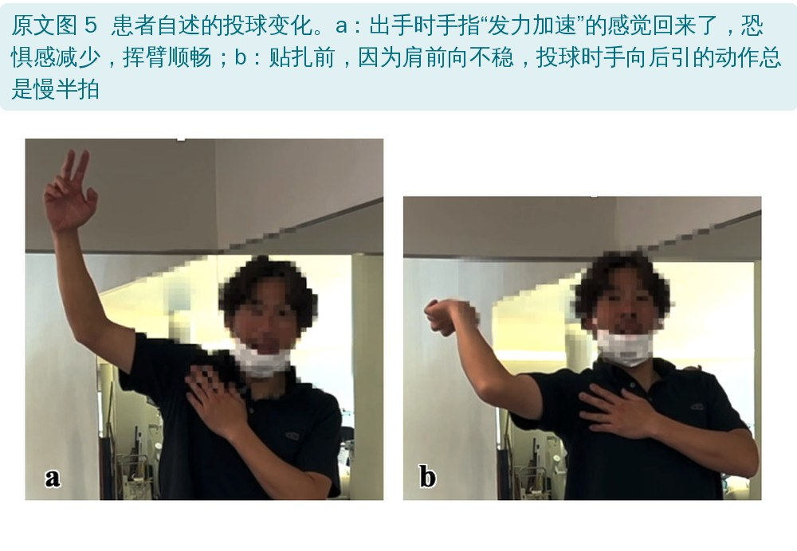
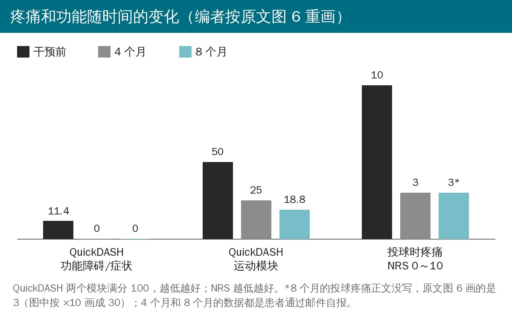
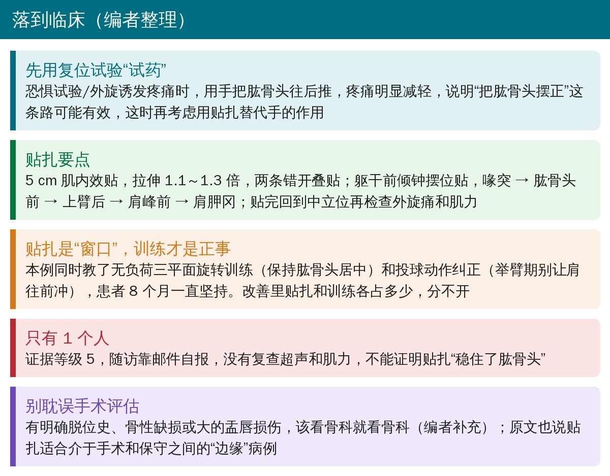

🔖原文信息（编者中文重排）
📚 文献信息
▪ Kawabata M, Miyata T, Miyatake K. A novel figure-eight taping technique for managing anterior shoulder instability in a recreational pitcher: a case report. Int J Sports Phys Ther. 2025;20(5):741-748. doi:10.26603/001c.136406
▪ 中文题目：新型 8 字贴扎治疗业余投手的肩关节前向不稳：病例报告
▪ 作者单位：日本北里大学保健医疗学部康复学系；相模原协同医院康复中心；横滨市立大学骨科
▪ 研究类型：单病例报告，证据等级 5
投手的肩反复处在外展外旋位，时间长了前方关节囊松弛，肱骨头在外旋末端会往前“溜”，就是肩关节前向不稳，常常伴随肩袖和盂唇的问题。不到手术指征的人，保守治疗效果并不确定。
临床上有个现象大家都熟：做复位试验时，检查者用手把肱骨头往后推，患者外旋立刻就不疼了、也不害怕了。问题是手不能一直按在肩上。日本北里大学的川畑团队想了个办法：用肌内效贴贴成一个“8”字，代替那只手，从前方稳住肱骨头。
这篇报告了 1 名 6 年没法投球的业余投手，只做了 1 次贴扎和动作指导，当场外旋就不痛了，4 个月后自述回到比赛、球速 115 km/h。贴法很具体，值得学；但只有 1 个人、随访全靠邮件自报，贴扎和训练的作用也分不开，后面会讲清楚。

• 41 岁男性，右利手，曾是全国级别比赛的半职业投手，现在打业余棒球
• 肩痛逐渐加重，已经 6 年不能投球，就诊前 1 个月明显加重，影响日常生活
• 肩袖间隙注射过激素加局麻药，活动时的疼痛仍然存在
• 疼痛部位：肩袖间隙和肩后方，按压和活动都诱发剧痛
• 主动活动度（受疼痛限制）：外展 160°；中立位外旋 30°；外展 90° 位外旋 90°、内旋 30°
• 肌力：外旋（中立位和外展位）只有 2/5，主要是疼得使不上劲
• 疼痛：投球时 NRS 10/10，外旋时 8～9/10，休息时 0
• QuickDASH：功能障碍/症状 11.4，工作 0，运动模块 50/100

• 后方关节盂到冈下肌深层有多普勒血流信号，作者判断是 Bennett 病损（投手后下方关节盂的骨赘）周围的炎症；超声下按压能复现疼痛
• 动态超声：中立位外旋到末端时，肱骨头向前移了 4.43 mm，与疼痛出现的时间一致
• 做复位试验（手推肱骨头向后）再外旋，肱骨头反而向后移了 2.31 mm，外旋痛完全消失

这一步是整篇的逻辑起点：“把肱骨头往后摆正 → 不疼”已经在这个人身上验证过，贴扎要做的就是把这只手“固化”下来。


• 材料：5 cm 宽肌内效贴（原文用 KILO TAPE），拉伸到原长的 1.1～1.3 倍
• 体位：患者躯干前倾，患臂自然下垂（钟摆位）
• 两条叠贴：两条走向相同，叠在一起贴，彼此稍错开一点
• 走向：喙突起贴 → 经肱骨头前方 → 水平绕过上臂近端后侧 → 向头侧提拉到肩峰前方 → 止于肩胛冈。前后两段在肱骨头中心交叉，成“8”字
• 关键一步：贴好后手臂从钟摆位回到中立下垂位，向上那段胶布的张力增加，作者认为这能增强盂肱关节的前方稳定
• 原文附有操作视频（见文末补充材料链接）
• 家庭训练：无负荷的三平面主动旋转，要求全程保持肱骨头居中
• 投球动作纠正：防止肩在举臂（cocking）期过度前移
• 因为患者住得远，整个干预只有这 1 次，之后没有再贴，也没有其他治疗，家庭训练由患者自己坚持
• 外旋肌力从 2/5 提高到接近 5/5
• 外展 45°、90° 外旋发力，以及出手位“往前推”时，疼痛 NRS 降到 1～3/10
• 空手做投球动作（后期举臂、最大外旋、出手），原来都疼，贴上后都不疼了；能顺畅地扔网球
• 患者自己说：出手时手指“发力加速”的感觉回来了，恐惧感明显减轻，手臂又能“不用想就自然地挥”；还意识到以前因为肩往前滑，肘和手到出手点总是慢半拍
• 贴着胶布没法做超声，所以作者没能验证肱骨头前移是不是真的减少了


患者自述贴着胶布从 18.44 米（正式投手板到本垒的距离）以大约 85% 的力量投球。研究者没有亲眼看到。

• 4 个月（邮件）：已经回到比赛，最快球速 115 km/h（赛场测得，患者自报），投球痛 NRS 3/10；QuickDASH 功能障碍/症状 0、工作 0、运动模块 25（比初诊降了 25 分，作者说超过了 MCID 19 分）
• 8 个月：仍在业余投球、坚持训练，QuickDASH 运动模块 18.8，其余两项 0
• 患者说贴扎带来的稳定感帮他重新找回了自然的引臂动作，恢复了原来的投球技术
• 机制推测：贴扎提供感觉反馈、可能增强神经肌肉控制，从而改善前向不稳、减轻疼痛；主要作用在盂肱关节，但也可能间接改善肩胛位置，而肩胛位置和肱骨头居中有关
• 不限制活动：这种贴法没有限制活动度，反而让患者动得更舒服
• 教育作用：一次干预就让患者体会到正确的关节运动，没专门教投球动作也能自己改，作者认为可能触发了长期的运动学习
• 定位：盂唇修复、肩袖间隙闭合是确定性治疗，但恢复期长，还可能限制投球需要的活动度；常规肩袖力量训练对结构性不稳效果差。8 字贴扎不适合明确该手术的人，但可以作为手术和保守之间“边缘”病例、或常规保守治疗无效者的选择
• 局限：随访靠自报而非临床评估；没有对照组或与其他保守治疗比较；可能只适用于和这个患者特征相似的人；病例报告不能证明因果
"As the case report methodology does not establish cause-and-effect relationships, these results should be interpreted with caution."
"病例报告的方法学不能建立因果关系，这些结果应谨慎解读。"
• 1 个人，证据等级 5：同一次就诊里做了贴扎、家庭训练、投球动作纠正三件事，后面几个月的改善分不清是谁的功劳，作者自己也说动作纠正和训练坚持了 8 个月
• “当场见效”可能有期待效应：疼痛和 MMT 都是同一个知道干预内容的治疗师测的，患者也知道贴了“稳定胶布”。MMT 2 级的原因是“疼得使不上劲”，疼痛一缓解肌力自然回来，这不等于肌肉控制真的变了（编者观点）
• 没有证据显示肱骨头被“稳住”：贴着胶布做不了超声，4 个月、8 个月也没复查。“贴扎有效稳定了肩关节”是作者从功能改善推出来的
• 随访全是邮件自报：球速、NRS、QuickDASH 都是患者自己报的；8 个月的投球疼痛正文没写
• 诊断不够完整：没说有没有脱位或半脱位史，没报告恐惧试验和其他不稳检查的结果（关键词里却有 apprehension），没有 X 线、MRI 看盂唇和骨性结构；“Bennett 病损”只靠超声判断，通常要 X 线或 CT 确认；4.43 mm 前移也没和健侧比较
• 注射时间不清：肩袖间隙注射激素是什么时候、注射后多久来就诊，原文没写，无法排除对后续疼痛变化的影响
• 优点：用动态超声和复位试验把“为什么贴”讲得很清楚；贴法步骤、拉伸比例、体位都写了，还有视频，容易照着做；作者对局限也说得比较坦白
• “当天投球”：摘要写“the subject pitched from 18.44 meters at 85% intensity on the same day”，像是确定的结果；正文写的是回家后自述，研究者没有看到
• 图 6 的单位：投球疼痛 NRS（0～10）和 QuickDASH（0～100）画在同一个“分”轴上，NRS 被乘以 10 画成 100 和 30，图注没有说明；8 个月的 NRS 3 只出现在图里，正文没有
• MCID 的用法：引用的 MCID 19 分（Polson 2010）是 QuickDASH 主量表的，作者拿来评价运动模块；而主量表（功能障碍/症状）只从 11.4 降到 0，变化本身小于 19 分。初诊时功能障碍/症状只有 11.4，也和“影响日常生活”的描述不太相称
• MMT 分级：写的是“Kendall 0～5 级”，0～5 级通常是 MRC/Daniels 的分法，Kendall 常用 0～10 级或百分比（编者注）
• 图 4 分图编号：从 c 直接跳到 e，没有 d
• 图 3 拼写：图中“Seapular spine”应为 Scapular spine（本文中文版已改为“肩胛冈”）
• 许可声明：版权页写“Creative Commons Attribution 4.0 International License (CCBY-NC-4.0)”，名称和括号里的缩写不一致；链接指向的是 CC BY-NC 4.0（非商业），本文按非商业许可处理

🔖临床要点（编者整理）
• 先用复位试验“试药”：外旋或恐惧试验诱发疼痛时，用手把肱骨头往后推，疼痛明显减轻的人，再考虑用贴扎替代这只手
• 贴法记住五个点：喙突 → 肱骨头前 → 上臂后 → 肩峰前 → 肩胛冈；5 cm 肌内效贴拉伸 1.1～1.3 倍，两条错开叠贴，躯干前倾钟摆位贴，贴完回到中立位复查外旋痛和肌力
• 贴扎是“窗口”：趁不疼的时候教肱骨头居中的旋转训练、纠正举臂期肩前冲，这些才需要患者长期坚持
• 该转诊就转诊：有明确脱位史、骨性缺损或较大盂唇损伤的，先做影像和骨科评估（编者补充）
• 评估要客观：有条件的话贴前贴后都做动态超声、手持测力计测外旋力量，并定期复查，而不是只靠患者自报
欢迎关注骨科康复小黄公众号，获取更多物理治疗的专业知识！
📄参考文献：
Kawabata M, Miyata T, Miyatake K. A novel figure-eight taping technique for managing anterior shoulder instability in a recreational pitcher: a case report. Int J Sports Phys Ther. 2025;20(5):741-748. doi:10.26603/001c.136406
补充材料（贴扎操作视频）：https://ijspt.scholasticahq.com/article/136406
原文 © The Author(s)，以知识共享署名—非商业性使用 4.0 协议（CC BY-NC 4.0）开放获取。本文为非商业的学术交流中文解读：原文图 1～3 图内英文和缩写由编者译为中文（图 3A 标签为编者擦除原文后重写），其余未改动；原文图 4、5 原样引用，中文说明为图外图注；疼痛与功能变化图为编者按原文图 6 数据重画；首图、病例经过图、贴扎步骤卡、临床要点卡和封面为编者根据原文整理绘制。版权归原作者所有，如有侵权请联系删除。